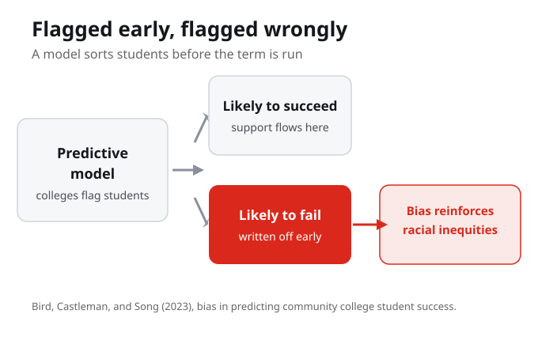
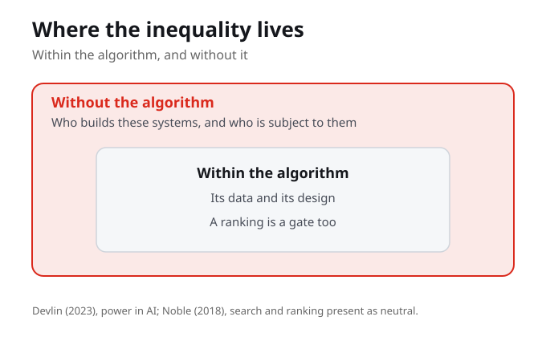

What Do You Know?
1. Algorithmic gatekeeping refers to:
2. A common harm of an algorithmic gate is that the person kept out often:
3. Bird, Castleman, and Song (2023) studied predictive models that colleges use to:
4. Bird, Castleman, and Song found that algorithmic bias in these predictive tools can:
5. Devlin (2023) says inequality within the algorithm lives in:
6. Devlin (2023) says inequality without the algorithm lives in:
7. Safiya Umoja Noble argues that search and ranking systems can:
Purpose and Learning Outcomes
Week 10 examines algorithmic gatekeeping, the automated systems that decide access in hiring, lending, and education. Students analyse how these gates can reproduce racial inequity at scale, and ask who is accountable when they do.
By the end of this week you should be able to
- Explain algorithmic gatekeeping and give an example from hiring, lending, or education.
- Summarise the Bird, Castleman, and Song (2023) finding on bias in predicting student success.
- Distinguish inequality within the algorithm from inequality without it, after Devlin (2023).
- Identify a gate in your own life decided by a system, and add it to your Living Cartography.
Guiding Questions
- When an algorithm decides who is let through a gate, who can the person who is kept out actually ask?
- Bird, Castleman, and Song found bias in predicting student success. What is the harm in being flagged, early and wrongly, as likely to fail?
- Devlin distinguishes inequality within and without the algorithm. What does each mean, and why do both matter?
- Noble argues search results are not neutral. Where have you seen a ranking that quietly sorted people?
- Which gate in your own life, a job portal, a loan, an admission, a benefit, was decided in part by a system?

Picture a gate
Picture a gate. Many applicants on one side, an automated decision in the middle, two streams on the other: let through, and kept out. The gate decides at scale and in an instant. And every gate an algorithm now guards was once guarded by a person you could at least ask to explain.
An algorithmic gate decides at scale and in an instant. The same decision that once passed through a person you could ask now passes through a system that answers no one.
Picture a gate
Picture a gate. Many applicants on one side, an automated decision in the middle, two streams on the other: let through, and kept out. The gate decides at scale and in an instant. And every gate an algorithm now guards was once guarded by a person you could at least ask to explain.
Two streams come out of the gate: let through and kept out. The person kept out often has no one to ask and no decision to appeal.
When an algorithm decides who is let through a gate, who can the person who is kept out actually ask?

Bird, Castleman, and Song, in 2023, studied predictive models
Bird, Castleman, and Song, in 2023, studied predictive models that colleges use to flag students likely to succeed or fail. They found algorithmic bias can reinforce racial inequities, so a tool sold as help can label some students, early and wrongly, as poor bets.
A tool sold as help can label some students, early and wrongly, as poor bets. Bird, Castleman, and Song found that algorithmic bias in these predictive models can reinforce racial inequities.

Kate Devlin, in 2023, names where the inequality lives
Kate Devlin, in 2023, names where the inequality lives: within the algorithm, in its data and design, and without it, in who builds these systems and who is subject to them. And Safiya Umoja Noble shows that search and ranking systems can reproduce racism and sexism while presenting as neutral. A ranking is a gate too. We point you to her book for the primary text.
Devlin names two homes for inequality: within the algorithm, in its data and design, and without it, in who builds these systems and who is subject to them. Both matter, because changing one does not fix the other.
Devlin distinguishes inequality within and without the algorithm. What does each mean, and why do both matter?
You meet a gate, ask who it
So when you meet a gate, ask who it lets through, who it keeps out, whether the harm falls along race, gender, or class, and who can be asked to answer for it.
Meeting a gate is a set of questions: who it lets through, who it keeps out, whether the harm falls along race, gender, or class, and who can be asked to answer for it.
Which gate in your own life, a job portal, a loan, an admission, a benefit, was decided in part by a system?
What You Are Learning This Week
Gates Decide at Scale and in an Instant
Algorithmic gatekeeping is the use of automated systems to decide who is granted access: who is hired, who is approved for credit, who is admitted. The gate operates at scale and at speed, and the person kept out often has no one to ask and no decision to appeal.
A Tool Sold as Help Can Still Harm
Bird, Castleman, and Song (2023) found that algorithmic bias in predictive models can reinforce racial inequities. A model meant to flag students who need support can instead label some, early and wrongly, as likely to fail.
Inequality Lives Within and Without the Algorithm
Devlin (2023) shows the inequality is not only in the data and design inside the system. It is also in who builds these systems and who is subject to them. A ranking, as Noble argues, is a gate that can reproduce racism and sexism while presenting as neutral.
Ask Who Answers for the Gate
Every gate an algorithm now guards was once guarded by a person you could ask to explain. When you meet a gate, ask who it lets through, who it keeps out, whether the harm falls along race, gender, or class, and who can be asked to answer for it.
Connections to This Week
We came to this week from a promise of technological benevolence, the idea that automating a decision makes it fairer and more objective. This week tests that promise against the gates these systems now guard.
Algorithmic gatekeeping decides access in hiring, lending, and education. Bird, Castleman, and Song show the bias is measurable in predicting student success, and Devlin names where the inequality lives, within the algorithm and without it.
If the gate keeps people out quietly, at scale, with no one to answer for it, the question becomes who resists it and what policy can require. The weeks ahead move from naming the gate to resistance and policy.
Reflection Corner
Every gate that an algorithm guards was once guarded by a person who could be asked to explain. When the gatekeeper is a model, who do you ask, and what happens to the people the gate keeps out quietly, at scale, with no one to answer for it?
Your notes save automatically on this device and stay after you close your browser or shut down. Use Save my notes (below) to download a copy you can keep or open on another device.
What You Now Know
Why is algorithmic gatekeeping described as deciding at scale and in an instant?
What is the harm Bird, Castleman, and Song point to in flagging students early?
Devlin distinguishes inequality within and without the algorithm. Both matter because:
When you meet a gate, the week asks you to ask:
What to Do Next
Read Bird, Castleman, and Song (2023)
Are algorithms biased in education? Exploring racial bias in predicting community college student success. Track how a predictive model flags students and where the bias enters, so you can name the harm in being flagged early and wrongly.
Read Devlin (2023)
Power in AI: inequality within and without the algorithm. Hold the two locations apart as you read: the data and design inside the system, and who builds it and who is subject to it. Then read Noble (2018) for the primary argument that a ranking is a gate too.
Add a Gate to Your Living Cartography
Identify a gate in your own life decided in part by a system, a job portal, a loan, an admission, a benefit. Note who it let through, who it kept out, and who you could ask to answer for it, then add it to your Living Cartography.
References
Bird, K. A., Castleman, B. L., and Song, Y. (2023). Are algorithms biased in education? Exploring racial bias in predicting community college student success. EdWorkingPaper, University of Virginia.
Devlin, K. (2023). Power in AI: Inequality within and without the algorithm. In The handbook of gender, communication, and women's human rights (pp. 123-139). Wiley-Blackwell. https://doi.org/10.1002/9781119800729.ch8
Noble, S. U. (2018). Algorithms of oppression: How search engines reinforce racism. NYU Press. (Source note: referenced from its widely cited argument; consult the book for direct quotations.)